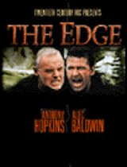
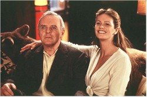
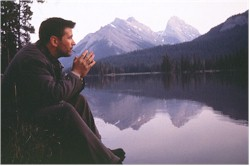
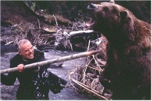
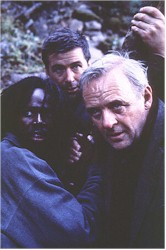

Contents | Features | Reviews | News | Archives | Store |
 |
|
| Movie Credits | Buy It! |
The Edge
Review by Carrie
Gorringe
Posted 26 September 1997
|  | Directed by Lee Tamahori Starring Anthony Hopkins, Alec Baldwin, Screenplay by David Mamet |
Charles Morse (Hopkins) seems to be a very lucky man; he’s a billionaire, with a beautiful supermodel wife named Mickey (Macpherson). But there are problems: he doesn’t seem to trust anyone and, despite his wife’s protestations of love, she also appears to have been put off by his coldness and skittishness; when she tells her husband that he reminds her of an angel, Morse brushes off her compliment by replying, "Everything but the wings." Mickey is off to Alaska for a photo shoot with her favorite photographer Bob (Baldwin), who seems somewhat too willing to read her kindness for something more significant – behavior that is not lost on Mr. Morse. Bob, one of these unpleasant yuppie "artiste" types replete in the stereotypical black leather and shallow mentality, doesn’t find the atmosphere authentic enough for his perceptions, and sees the male model of his dreams in a photo at the lodge. Informed that the model – actually, a hunter and trapper -- lives some eighty miles further north, Bob decides to fly up there and takes Mickey’s husband with him and his assistant, Steve (Perrineau), with him. As the trapper is not at his cabin, Bob wants to fly up to the lake, and disaster ensues, with a plane crash that leaves Bob, his assistant, and Mickey’s husband stranded in the wilderness. Two developments stand between them and the presumably typical survival experience. Morse, an avid reader with computer-like powers of recall, has been avidly consuming, of all things, a manual on just that topic throughout the film’s first half hour. Second, there’s that one question that Morse asked Bob just before the plane crashed, "So, how are you planning to kill me?" It’s a particularly jolting non-sequitor that haunts their attempts to stay alive.
In 1994 Lee Tamahori burst into critical consciousness with Once Were Warriors, a tale about the deleterious effects that white culture had had upon Maori life in New Zealand. After a bad tumble with the neo-noir Mulholland Falls, Tamahori has, in a way, returned to his original theme; The Edge, for all of its concerns with man versus nature and versus man, is also about the arrogance of silly white people who think they can just alter culture, or, in this case, nature, with impunity. Having been seduced by the pristine nature of the trees and the water, their instincts inured by years of centralized climate control, twenty-four-hour supermarkets, and running water, they conveniently forget that nature wields sharp teeth in her own defense. Re-reading accounts of pioneer life, with its isolation, deprivation and constant risk, is a sobering reminder of how little regard nature has for those without the knowledge to survive. Ask any "weekend warrior" who has found him/herself stranded in the wilderness waiting for the rescue team to arrive and has been lucky enough to survive the wait just how willing he/she would be to undergo the experience again The above shouldn’t be interpreted as an edict for a wholesale paving-over of paradise in favor of parking lots, but the Rousseauesque interpretation of nature as wholesome and superior to civilization is equally flawed. Nature has a level of absoluteness that modern mankind, with its emphasis upon the ambiguities of urban life, tends to lack, and, when nature and mankind meet on nature’s terms, the result can be deadly.
The Edge captures this antinomial situation perfectly. As the men stumble toward survival, they know (or will soon learn) there is no time for the luxury of indulging in personal animosities. Only later, with safety in sight, can those problems reemerge. Naturally, with such issues at the forefront, a film like this, in order to not only survive but excel at its task requires three elements: a flawless script, direction and acting, especially from the two male principals. The Edge has all three in excess (to the point where it can and it should donate some of its overflow to certain other contemporary films in desperate need which shall remain nameless). The tendency toward arch irony and smart patter that often colors Mamet’s work, which can seem somewhat pretentious from time to time (certain sections of American Buffalo and the opening sequence of Mamet’s new film, The Spanish Prisoner, fall into this unfortunate category), is actually fitting for the extreme nature of the situation in which the characters find themselves. At one point in their self-inflicted adventure, Bob inquires of Morse as to the condition of Bob’s assistant. "How sick is he?" asks Bob. Morse’s brittle, laconic response: "He’d have to get better to die." In the midst of misery, you can either laugh or cry, and the characters in The Edge are never short of blackly humorous retorts, producing them in mass quantities as if they were talismans warding off the intervention of fate.
The Edge’s plot structure, although fairly basic, is constructed on a strong narrative footing; the situations in which Mamet and Tamahori place their characters are both plausible and truly bone-chilling; a twenty-minute sequence involving Morse, Bob and a Kodiak bear (the man-killing type) will freeze the hairs on the back of your neck permanently, and will forever abolish any beliefs you have concerning the cuddliness and cuteness of bears. Tamahori keeps the suspense rolling along nicely by a deft alternation between long shots that keep the men isolated in their unwelcoming environment and tightly-edited action sequences; viewers will not suffer from the problem of knowing what they’re looking for or at, but they may want to reconsider looking at all during certain scenes.
The acting is immaculate, providing new insights into the respective talent pools of Anthony Hopkins and Alec Baldwin; both actors dip in deeply, and surface with work that registers quite strongly in the minds of the audience members. Once Sir Tony is given the opportunity to cast off his bemused demeanor in the wild, he goes native with a vengeance. We’ve seen him give out cold-edged grit before, in Silence of the Lambs, but Charles Morse is not Hannibal Lecter. There is none of the detached rage of a serial killer at work here; the rage in Morse is omnipresent, mixed with a strong dose of fear, and barely constrained by a realization that resorting to urban paradigms of survival will result in death. It is Morse who reminds Bob that most people stranded in the wilderness die, not from exposure, but from the shame of not knowing what to do, with panic coming up close on the heels of shame. Hopkins keeps Morse’s internal struggle against succumbing to shame up-front, and, by so doing, keeps him interesting. This is truly a great performance, but the most surprising one comes from Baldwin, whose acting skill has not been shown to its best advantage of late (his role as the creepy extortionist in The Juror might have been an exception to this statement had the film itself not been so ludicrous). He has all of Bob’s nuances down pat, and then invests them with sufficient desperation to build a human being who is more than your average urban hysteric with no access to a blow dryer. Just when the audience thinks that Bob has settled into a pattern of blandness, Baldwin will suddenly churn up the dark undercurrent in Bob’s personality, and like Hopkins with Morse, keeps everyone guessing until the final reel. Macpherson and Perrineau add as much depth as they can to what, essentially, are nothing more than minor supporting roles. The Edge will take you as close as possible to excitement as it is possible to get without actually being present, and who wants to wait in the cold for the rescue squad, anyway?
Contents | Features | Reviews | News | Archives | Store
Copyright © 1999 by Nitrate Productions, Inc. All Rights Reserved.